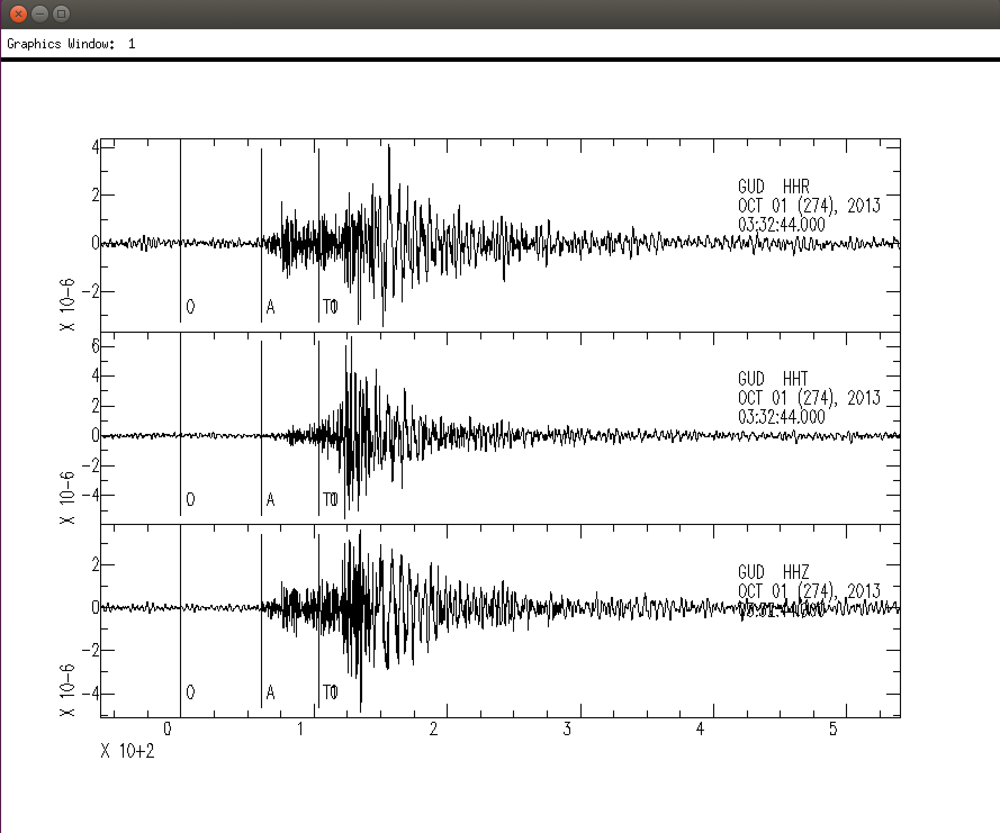
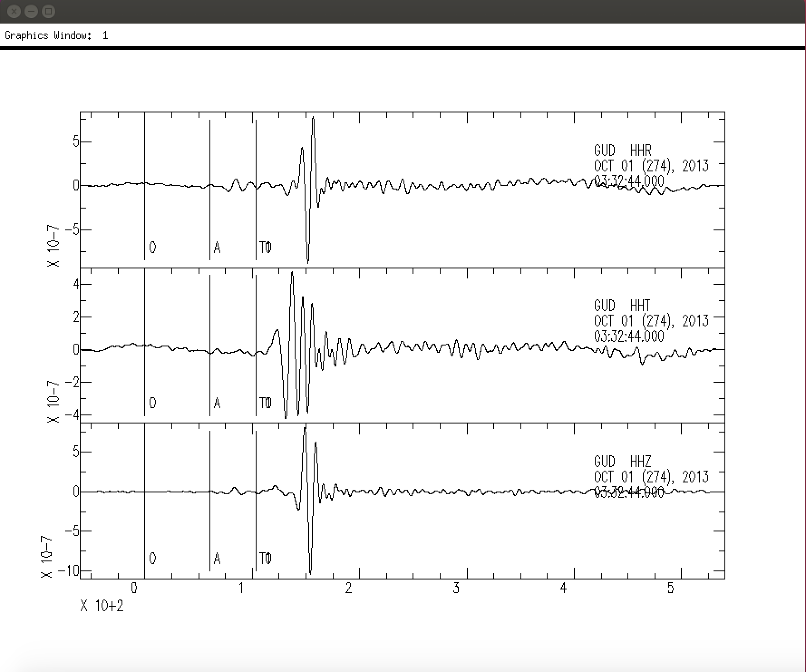
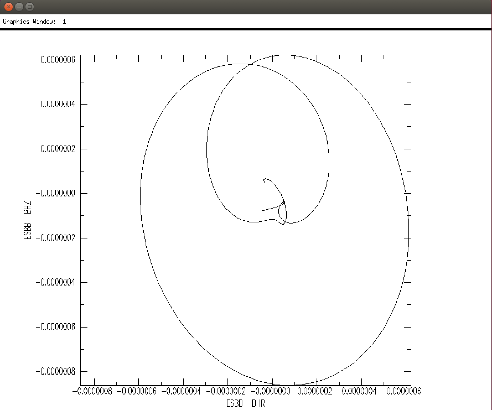
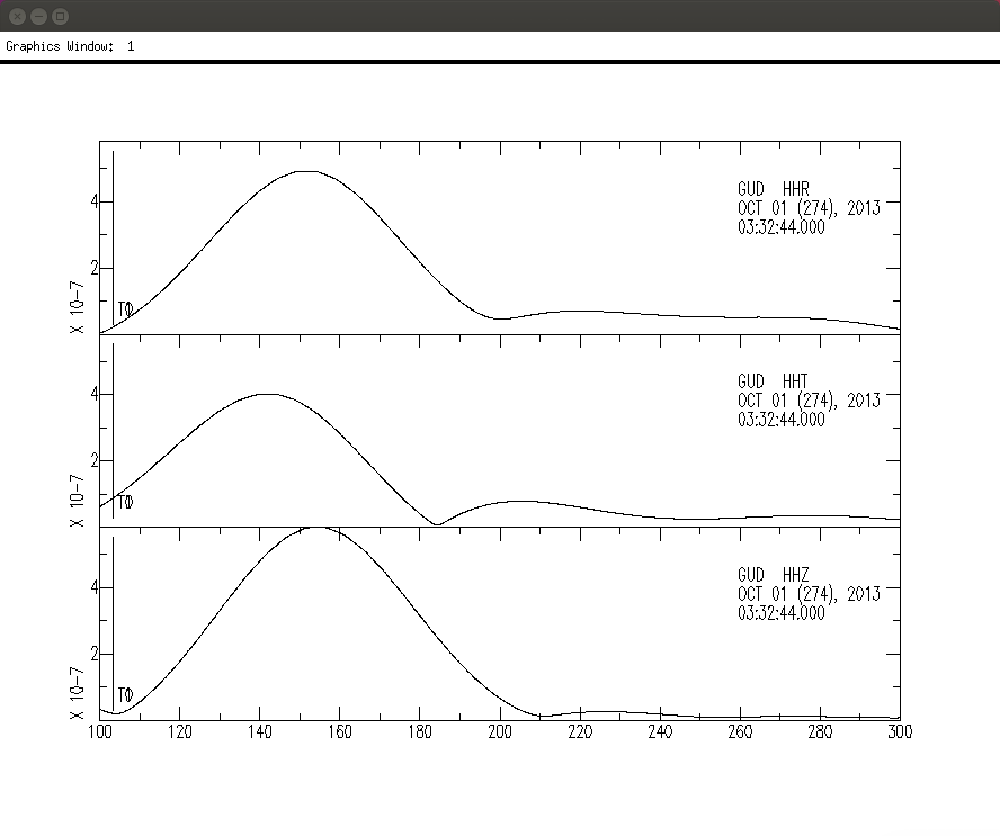
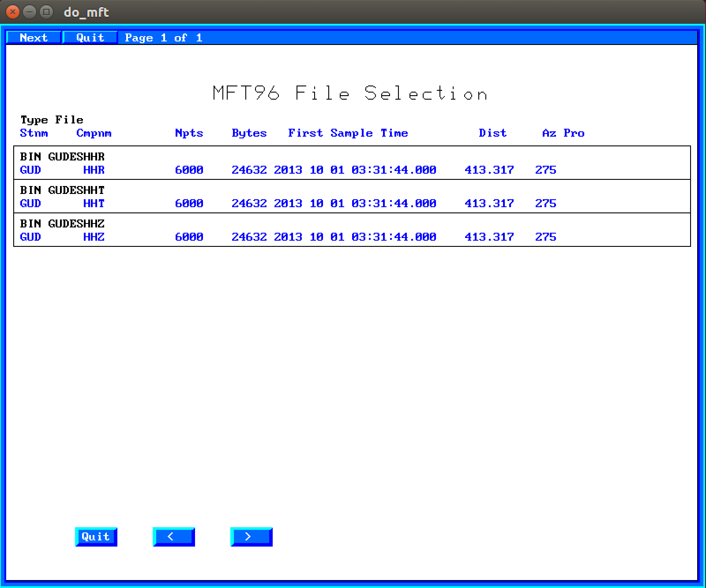
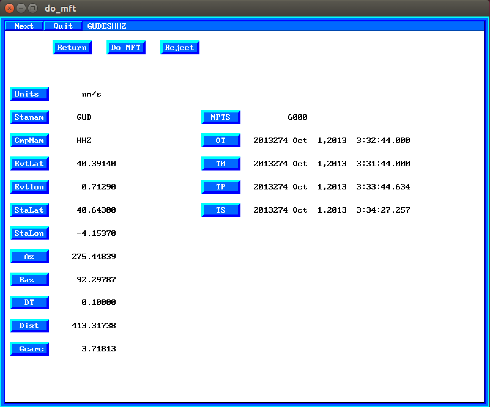
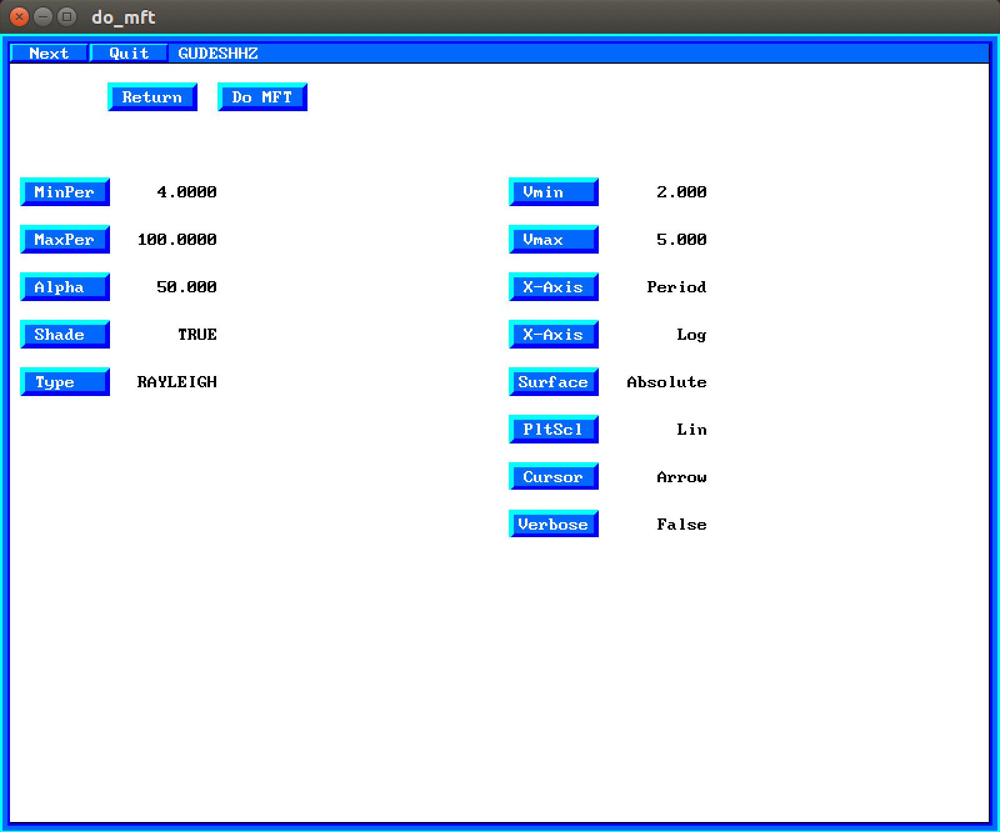
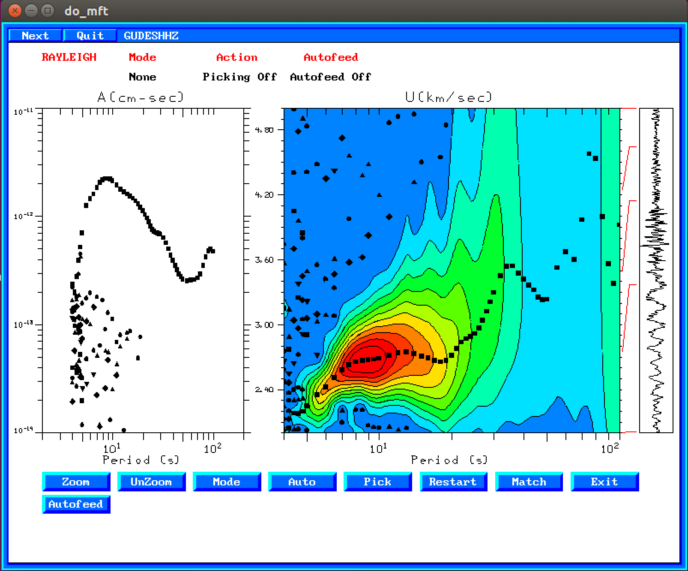
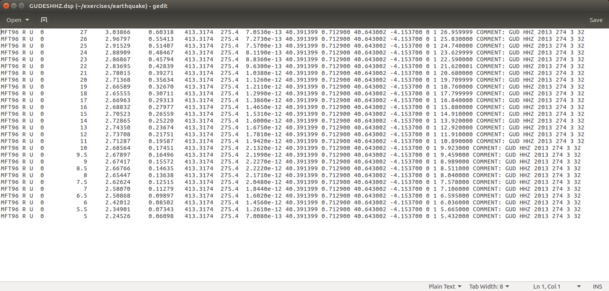

1. Medidas de dispersión de ondas superficiales de terremotos
1.1. Observación de ondas superficiales y fundamentos de SAC
En primer lugar utilizaremos el programa SAC (Seismic Analysis Code) para visualizar
sismogramas e identificar las ondas superficiales. El manual detallado de SAC se
encuentra en este enlace.
Los sismogramas de este ejercicio se encuentran en el directorio ~/exercises/earthquake
(el símbolo ~ significa home directory, en nuestro caso /home/seismo)
$ cd # ir al home directory
$ cd exercises/earthquake # presionar TAB para completar el nombre
Lanzar el program SAC y ejecutar los siguientes comandos:
$ sac
SAC > r GUD* # lee los archivos para la estación GUD
SAC > lh columns 2 delta baz # listar los valores de la distacia epicentral y backazimuth
SAC > qdp off # no utilizar baja resolución en los plots
SAC > p1 # dibujar los datos
SAC > rmean # quitar la media
SAC > taper # aplicar un taper antes de filtrar
SAC > lowpass co .1 n 3 p 2 # filtro pasa bajas frecuencias
SAC > ppk bell off # plot and pick: usar “x” y “o” para hacer y deshacer zoom
SAC > ... # practicar con ppk y presionar "q" para volver al programa
SAC> r ESBBESBHZ ESBBESBHR # leer solo las componentes vertical y radial
SAC> rmean
SAC> taper
SAC> lowpass # en SAC los comandos recuerdan los parámetros anteriores
SAC> ppk # usar el cursor para comprobar que las componentes Z y T están desfasadas
SAC> xlim 130 170 # limitar el rango de tiempo a dibujar
SAC> p1
SAC> ppm # dibujar el movimiento de la partícula
SAC > q # salir de SAC
$
Sismogramas originales para la estación GUD:

Sismogramas filtrados con pasa bajo de 10 segundos (después de ejecutar el comando lowpass co .1 n 3 p 2):

Movimiento de la partícula para la estación ESBB (después de ejecutar el comando ppm):

Repetir este procesado con otras estaciones.
Otros comandos útiles de SAC son: bp, fft, psp. Buscarlos en el manual o usar
la ayuda del programa:
SAC > help bp
Probar estos comandos con algunos de los sismogramas en este directoria
1.2. Medida de velocidad de grupo de terremotos
Ir al direcorio de trabajo:
$ cd
$ cd exercises/earthquake
En primer lugar probaremos un método sencillo, que es el de filtrar el sismograma en la banda de frecuencias (periodos) de interés, y calcular el máximo de la envolvente del sismograma filtrado:
$ sac
SAC> r GUD*
GUDESHHR GUDESHHT GUDESHHZ
SAC> qdp off
SAC> p1
SAC> xlim 100 300
SAC> p1
SAC> rmean
SAC> taper
SAC> bp co .09 .11 n 3 p 2 # filtrar en una banda de frecuencia en torno a 0.1 Hz (10 segundos)
SAC> p1
SAC> envelope
SAC> p1
SAC> ppk bell off # colocar el cursor en el máximo de la envolvente y leer el tiempo
Después de aplicar el filtro y calcular la envolvente debería obtenerse una figura como esta:

Utilizar el cursor para leer el tiempo del máximo de la envolvente. La medida en la componente
transversal dará la velocidad de grupo de la onda Love, y la medida en la vertical (o radial)
dará la velocidad de la onda Rayleigh. La velocidad de grupo se calcula simplemente haciendo:
donde es la distancia epicentral (variable delta de la cabecera
del archivo SAC y es el tiempo de llegada medido del máximo de la envolvente.
Repetir este proceso para otros periodos (p.e. 5 segundos). Si la banda de frecuencia del filtro es muy estrecha pueden aparecer artefactos en la señal filtrada.
En segundo lugar probaremos en método FTAN (frequency-time analysis), en concreto la implementación
de este método en el programa do_mft de los Computer Programs in Seismology.
Estando en el directorio de trabajo ~/exercises/earthquake introducir:
$ do_mft -G GUD*
Debería aparecer una pantalla como esta, en la que se puede seleccionar el sismograma que se va a analizar:

Seleccionar uno de los sismogramas, p.e. GUD HHZ. A continuación aparecerá una pantalla con información del sismograma:

Inicialmente las unidades del sismograma aparecen como Unknown. Haciendo click sobre el botón
azul Units se pueden seleccionar las unidades, que en nuestro caso son nanometros por segundo (nm/s).
Una vez estén seleccionadas las unidades, hacer click en el botón Do MFT.
Entonces aparecerá la ventana en la que se pueden seleccionar los parámetros para el frequency-time analysis (o también denominado multiple filter analysis):

Inicialmente el tipo de ondas (parámetro Type) aparece como UNKNOWN. Haciendo click sobre
el botón Type se puede cambiar el tipo de onda a LOVE o RAYLEIGH, según el sismograma que
se haya seleccionando. Una vez seleccionado el tipo de onda, hacer click en el botón Do MFT
y aparecerá el resultado del análisis FTAN:

En el panel izquierdo se muestra el máximo de la amplitud espectral para cada periodo, y en el panel derecho la distribución de la energía en función de la frecuencia (periodo) y del tiempo (velocidad). En este caso es fácil indetificar la energía asociado al modo fundamental de la onda Rayleigh entre 3 y 30 segundos. El máximo de la amplitud espectral para cada periodo viene indicado con símbolos negros: cuadrados para el máximo absoluto y otros símbolos para máximos relativos.
La selección de los puntos de la curva de velocidad de grupo ha de hacerse de forma manual.
En primer lugar hacer click en el botón Auto y seleccionar Fund (modo fundamental).
A continuación hacer click en el primer punto que se quiera seleccionar, arrastrar el
cursor pasando por encima de los siguientes puntos a seleccionar y hacer click otra vez.
Los puntos seleccionados pasarán a color blanco. Repetir tantas veces como sea necesario
hasta seleccionar todos los puntos deseados. Si se quiere seleccionar o borrar un punto
indivudialmente, hacer click en el botón Pick y luego sobre el punto. Si estaba seleccionado
(color blanco) pasará a no estar seleccionado (color negro) y viceversa.
Una vez seleccionados los puntos de la curva de dispersión hacer clic en Exit y
pulsar si queréis guardar o no la curva de dispersión. Si decidís salvarla, creará
un archivo con el mismo nombre que el archivo del sismograma más la extensión .dsp.
Así, para el sismograma en GUDESHHZ creará el archivo GUDESHHZ.dsp.
Podéis ver el contenido de este archivo en pantalla haciendo:
$ cat GUDESHHZ.dsp
o bien editarlo con un editor como gedit:
$ gedit GUDESHHZ.dsp

Las columnas importantes de este archivo son:
- MFT96: nombre del programa que ha generado el archivo
- Tipo de onda (R o L)
- Tipo de medida: U = velocidad de grupo, C = velocidad de fase
- Modo: 0 = modo fundamental
- Periodo de la medida (en segundos)
- Velocidad de la medida (en km/s)
En este caso al velocidad de grupo medida para 10 segundos es de 2.69 km/s. Comparar este valor con el obtenido utilizando el máximo de la envolvente.
Para procesar todos los archivos en un directorio:
$ do_mft -G *T # componente transversal para medir disperión de ondas Love
$ do_mft -G *Z # componente vertical para medir dispersión de ondas Rayleigh
$ do_mft -G *R # componente radial; debería dar la misma medida que utilizando la vertical
Comprobar también que las medidas de dispersión realizadas en las componentes vertical y radial son iguales.